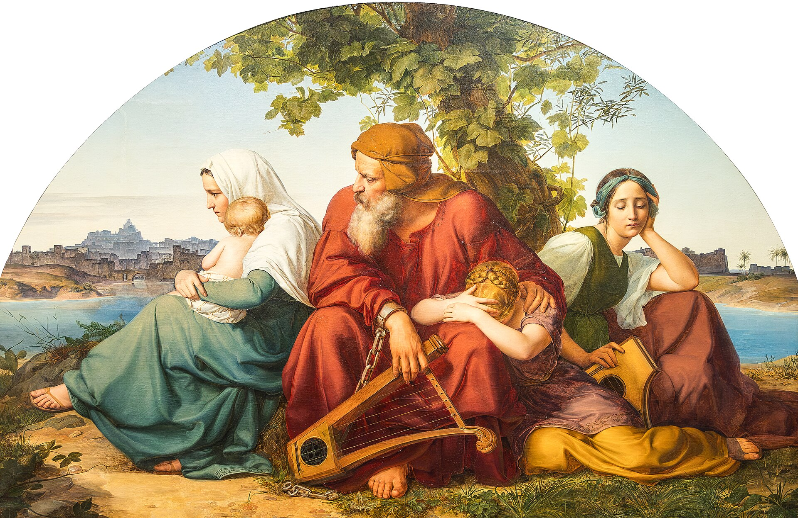

Jeremías 29 — La Traducción Mister

Las dos arpas son lo importante. Ambas están dejadas — una en el suelo bajo la mano del anciano, otra sin tocar en el regazo de la joven — porque esto es el Salmo 137: «sobre los sauces colgamos nuestras arpas… ¿cómo cantaremos el cántico de Jehová en tierra extraña?». La cadena se ve en la muñeca del anciano. La carta de Jeremías responde exactamente a esta postura, y su respuesta no es canten: es edifiquen, planten, cásense, multiplíquense y oren por la ciudad que les puso la cadena. Bendemann pintó una vid cargada de fruto justo encima de sus cabezas que ninguna de las cuatro figuras está mirando — que es, sin proponérselo, el versículo 5.
.jpg){kind=link}
שְׁבוּתְכֶם
וְקִבַּצְתִּי אֶתְכֶם מִכָּל-הַגּוֹיִם וּמִכָּל-הַמְּקוֹמוֹת אֲשֶׁר הִדַּחְתִּי אֶתְכֶם שָׁם, נְאֻם-יְהוָה; וַהֲשִׁבֹתִי אֶתְכֶם--אֶל-הַמָּקוֹם, אֲשֶׁר-הִגְלֵיתִי אֶתְכֶם מִשָּׁם.
לְזַעֲוָה
לְכֹל מַמְלְכוֹת הָאָרֶץ, לְאָלָה וּלְשַׁמָּה וְלִשְׁרֵקָה וּלְחֶרְפָּה, בְּכָל-הַגּוֹיִם, אֲשֶׁר-הִדַּחְתִּים שָׁם.
הַיּוֹדֵעַ
וָעֵד, נְאֻם-יְהוָה. {ס}
Notas del traductor — versículo por versículo
Cada nota explica la decisión de esta traducción y la compara con las versiones de la estantería.
1–4 — Una carta, con remitentes con nombre propio
El capítulo es una pieza de correspondencia, y nombra a los carteros. Elasá hijo de Safán y Gemarías hijo de Jilquías llevaban una embajada oficial de Sedequías a Nabucodonosor; la carta de Jeremías viajó con ellos. La familia de Safán aparece una y otra vez alrededor de Jeremías como protectora, lo que presumiblemente explica que pudiera hacer llegar una carta a Babilonia. El detalle es del tipo que un falsificador no se molestaría en inventar.
Ha-golah —«el exilio»— es un sustantivo colectivo, no un lugar. Significa la comunidad deportada misma, y se usa así a lo largo del capítulo (vv. 1, 4, 20, 31). Esta traducción lo mantiene como colectivo («todo el exilio») donde las versiones suelen pluralizarlo a «los exiliados», porque la carta va dirigida a un cuerpo, no a un conjunto de individuos; algo que resulta decisivo en el versículo 11.
5–7 — Busquen la shalom de la ciudad que los deportó
Los mandatos son implacablemente corrientes. Edifiquen. Vivan. Planten. Coman. Cásense. Tengan hijos. Casen a sus hijos. Tengan nietos. Cada verbo supone una larga estancia, y el último —«multiplicaos allí y no os aminoréis»— es el lenguaje de la bendición de la creación y de la promesa a Abraham, ahora dirigido a gente en un campo de prisioneros. La instrucción no es soportar Babilonia. Es vivir allí.
⚠ Y luego el versículo 7 pide algo mucho más difícil que la paciencia. Busquen la paz de la ciudad… y oren por ella. No tolerar; no sobrevivir; buscar —darash, el verbo de perseguir activamente algo, el mismo que se usa dos versículos más adelante para buscar al propio Dios (v. 13). Se les dice que trabajen por la prosperidad del imperio que quemó su templo, y que oren por él. La razón que se da no es moral sino práctica, y se afirma como un hecho llano: «porque en su paz tendréis paz». Su bienestar y el de sus captores son ahora una sola cosa.
El estante no se pone de acuerdo sobre lo activo que es el verbo. La RV60 dice «procurad la paz de la ciudad», la RV 1909 «procurad la paz de la ciudad» con el verbo más fuerte, procurad, que se acerca a «procurar» o «lograr» más que a «buscar». La NVI lo suaviza a «busquen la paz y la prosperidad», añadiendo un segundo sustantivo que el hebreo no tiene; y la TNM conserva la «paz» sola: «busquen la paz de la ciudad». Sobre darash esa es posiblemente la lectura más ajustada de todo el estante.
⚠ Cuenten la palabra, porque el capítulo está construido sobre ella. Shalom aparece cuatro veces en este capítulo, y tres de ellas están en el versículo 7, sobre Babilonia. La cuarta está en el versículo 11. Es el dato más importante para leer el versículo famoso, y es invisible en la mayoría de las Biblias en castellano porque traducen la palabra de manera distinta en los dos lugares: «paz» o «bienestar» aquí, «prosperidad» allá. La TNM conserva «paz» en ambos y es el lugar más fácil del estante para ver el vínculo; la RV60 tiene «paz» en el versículo 7 y «paz» también en el 11, así que también la conserva; la NVI las separa («paz y prosperidad»… «los prosperará») y el vínculo se pierde.
8–9 — Falsedad, el mismo cargo del capítulo 23
Los falsos profetas de Babilonia predicaban un exilio corto. Ese es todo el pleito de este capítulo, y de los capítulos 27 y 28 que lo preceden: Jananías ya había anunciado dos años (28:3, ya en estas páginas). La carta de Jeremías existe para decir setenta. ⚠ Conviene notar cuál mensaje es el consolador. Los profetas que prometen un regreso rápido son los populares, y el hombre que manda a la gente a desempacar es el acusado de deslealtad en el versículo 27.
Sheqer —falsedad, la Mentira— es la palabra que esta biblioteca catalogó en Jeremías 23, y hace aquí el mismo trabajo: no es solo un pronóstico inexacto sino una manera entera de estar en el mundo sin nada debajo.
10 — Setenta años, y una visita
⚠ Lean el versículo 10 antes que el 11, porque es la misma frase. La promesa de un futuro está condicionada a un número: setenta años. Para los adultos que leían esa carta, setenta años no son una demora: son el resto de sus vidas. A la gente que el versículo 5 manda edificar casas se le dice, con todas las letras, que morirá en esas casas. La buena palabra es real y es para sus nietos. Cualquier lectura del versículo 11 que lo desprenda del 10 ha quitado el costo a la promesa.
⚠ Cada «ustedes» del versículo 11 es PLURAL. El hebreo lo marca sin ambigüedad: aleikhem, lakhem, el sufijo de segunda persona masculina plural, tres veces en un solo versículo. Los planes son para un pueblo. El castellano no puede mostrarlo del todo, y por eso el versículo circula sobre todo como consuelo privado, impreso en tarjetas de graduación. ⚠ La única versión inglesa que sí lo muestra es la NWT 1984 en inglés, que imprime el «ustedes» plural en versalitas; sea cual sea la opinión sobre la tipografía, en este versículo hace un trabajo real que ninguna otra versión del estante intenta.
⚠ Y la palabra de la promesa es la palabra de Babilonia. Majshevot shalom —«planes de paz»— es el mismo sustantivo que Dios usó tres veces cuatro versículos antes para la ciudad a la que fueron deportados. No les promete una salida; les dice que lo que pretende para ellos es lo mismo que les mandó ir a buscar en Babilonia. «Planes para prosperaros» no es del todo incorrecto, pero apunta la frase a las circunstancias del lector, donde el hebreo la apunta a una palabra con una historia de cuatro versículos.
Los dos últimos sustantivos son menos acogedores de lo que suenan. Ajarit es la parte final: el resultado, el fin, lo que una cosa termina siendo (y a menudo, en los profetas, la posteridad de alguien). Tikvá es esperanza, y el sustantivo concreto que hay detrás es una cuerda: la misma palabra que la cuerda escarlata con la que Rahab bajó por la muralla. Así que el par está más cerca de «un desenlace, y algo a qué aferrarse» que del optimismo. Aquí se traduce «un desenlace y una esperanza»; «un futuro y una esperanza» es razonable, y la KJV «un fin esperado» es un intento real con ajarit que la mayoría de las versiones modernas han abandonado.
⚠ Nada de esto hace el versículo más pequeño; lo hace más difícil. Es una promesa de un buen desenlace, por escrito, de Dios, a un pueblo derrotado; y cuesta setenta años, se aplica a una nación, y encamina su bienestar a través de la prosperidad del imperio que se los llevó. El trabajo de la biblioteca aquí no es quitarle el versículo a nadie. Es imprimir a lo que está atado.
11–14 — El versículo 11, en plural
El mismo verbo vuelve. Darash —«buscar»— se usó en el v. 7 del bienestar de Babilonia, y se usa en el v. 13 de Dios: «cuando me busquéis de todo vuestro corazón». Buscar el bien de la ciudad y buscar a Dios se dan con el mismo verbo a seis versículos de distancia, lo que es o el punto del capítulo o una coincidencia muy económica.
⚠ Y el versículo 14 gira sobre shuv dos veces en un solo aliento: ve-shavti et shevutkhem, literalmente «haré volver vuestra vuelta». La expresión significa restaurar la suerte de alguien, y la duplicación es una figura etimológica que las versiones, con razón, aplanan («restauraré vuestra suerte»). ⚠ Los masoretas señalan también la palabra misma: el texto consonántico (ketiv) lee shevit y la tradición de lectura (qere) dice shevut; uno de esos lugares donde el rollo y la voz discrepan por una letra, y el manuscrito imprime ambas.
Todas las versiones aplanan la duplicación, y hacen bien, pero conviene ver qué se pierde. La RV60 conserva una sola «vuelta» («os haré volver de la cautividad»); la NVI da el sentido y deja caer la figura por completo. Esta traducción imprime la duplicación porque shuv es una raíz que esta biblioteca viene siguiendo desde los Salmos, y porque el capítulo acaba de gastar siete versículos en la pregunta de cuándo, y si alguna vez, alguien da la vuelta.
15–20 — La otra mitad de la carta
⚠ El capítulo invierte la suposición obvia, y lo hace a propósito. La gente que seguía viviendo en Jerusalén —que conservó sus casas, su ciudad y su templo— es la que recibe la espada, el hambre y la peste; los deportados, que lo perdieron todo, son los que tienen la promesa de setenta años. Librarse de la catástrofe no es lo mismo que estar del lado correcto de ella.
La imagen son los higos. «Como los higos malos, que de malos no se pueden comer» es una referencia directa a la visión de las dos cestas de Jeremías 24 —higos buenos para los exiliados, higos podridos para los que se quedaron—, que está ya en estas páginas, y que es el capítulo al que apuntaba el propio orden de este libro.
21–23 — Dos profetas asados al fuego
⚠ Esto está en la misma carta que el versículo 11, y conviene no saltárselo. Acab hijo de Colayá y Sedequías hijo de Maasías son entregados a Nabucodonosor y asados en el fuego —qalam ba-esh, el verbo corriente para tostar el grano. Los exiliados usarán sus nombres como fórmula de maldición. Quemar vivo se atestigua como castigo babilónico (es la pena del horno en la historia de Daniel 3), y el capítulo lo consigna sin comentario.
La acusación es triple, y el último punto es el importante. Cometieron adulterio, hicieron una nevalá —un atropello, la palabra que se usa de los peores crímenes en Jueces— y dijeron una palabra en mi nombre, falsamente. La propia frase de Dios sobre esto es escueta y algo escalofriante: «Y yo soy el que sabe, y testigo.»
24–32 — Correo cruzado, y una palabra brusca
El capítulo termina como correspondencia sobre correspondencia. Semaya, en Babilonia, escribe a la policía del templo en Jerusalén exigiendo que Jeremías sea puesto en el cepo —y le devuelve citada la propia carta de Jeremías: «Será largo. Edifiquen casas y habítenlas.» Esa cita (v. 28) es el versículo 5 de este capítulo, presentado como prueba de la acusación. Luego Sofonías el sacerdote lee en voz alta la carta de Semaya a Jeremías, y Jeremías escribe una tercera carta sobre ella. Tres piezas de correo y una lectura pública, todas conservadas.
«Todo loco que se cree profeta» es meshugga —y es la descripción oficial del cargo en la carta de Semaya, no un insulto que él invente. El templo tenía un puesto para contener a los profetas extáticos, con cepo y collar para hacerlo, y Semaya se queja de que el titular no hace su trabajo. ⚠ Conviene notar cuál es la acusación en realidad: a Jeremías no se le acusa de estar equivocado. Se le acusa de no haber sido silenciado.
Y el estante se divide sobre cuán brusco ser. La RV60 dice «todo hombre loco, que se hace profeta»; la RV 1909 «todo hombre loco que se finge profeta»; la NVI lo ordena en «cualquier maníaco que actúa como profeta». La palabra es de veras brusca —es el hebreo corriente para loco—, y como aquí aparece dentro de una descripción oficial de cargo y no como insulto, suavizarla pierde el hecho de que el templo tenía una categoría formal para esto y un armario de sujeciones para acompañarla.
Patrones que vale la pena recordar.
⚠ Lo único que conviene llevarse de este capítulo. Shalom aparece cuatro veces aquí. Tres están en el versículo 7, sobre el bienestar de Babilonia —búsquenla, oren por ella, «porque en su paz tendréis paz». La cuarta es el famoso versículo 11, «planes de paz». La promesa más citada de internet se formula con la palabra que Dios acababa de dedicar cuatro versículos a atar al imperio que los deportó, y se dirige en plural, a un pueblo, con un precio de setenta años dicho en la frase anterior. Toda versión que traduzca la palabra de una manera en el v. 7 y de otra en el v. 11 rompe el vínculo sin mistraducir nada.
Renderizaciones elegidas. Shalom translitera en los vv. 7 y 11 para que el vínculo se vea en la página. «Todo el exilio» para ha-golah, un colectivo y no un conjunto de individuos. «Un desenlace y una esperanza» para ajarit ve-tikvá: ajarit es la parte final, lo que una cosa termina siendo; tikvá es esperanza y, en concreto, una cuerda. «Haré volver su vuelta» en el v. 14, conservando una duplicación que todas las versiones aplanan. Y «loco» en el v. 26, porque la palabra es brusca y está dentro de una descripción de cargo.
Ecos pagados. Sheqer (v. 9), catalogada en Jeremías 23 y haciendo el mismo trabajo. Shuv (v. 14), la raíz que esta biblioteca viene siguiendo desde el Salmo 23. Y darash (vv. 7, 13), usado de buscar el bien de Babilonia y de buscar a Dios dentro de seis versículos.
Ecos plantados. Los setenta años (v. 10), que Daniel 9 leerá como un texto que hay que interpretar y no solo esperar. Los higos malos de los vv. 17–18, que son la visión de Jeremías 24, todavía sin traducir aquí. Y tikvá: la cuerda.
⚠ Lo que queda abierto, y nombrado en vez de alisado. El capítulo que contiene el versículo 11 contiene también dos profetas asados vivos en un fuego (vv. 21–23) y una promesa de espada, hambre y peste para la gente que se quedó en Jerusalén (v. 17). La biblioteca los imprime en la misma carta porque están en la misma carta.
⚠ Sobre el orden: el capítulo 29 se tradujo adelantándose a la secuencia del libro —un salto deliberado al capítulo más buscado del libro, no un tramo perdido. La visión de las dos cestas que citan aquí los vv. 17–18 está en Jeremías 24, ya en estas páginas.